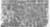

- 碑名
- 关键词
- 语种
- 字体
- 书体
- 文体
- 国图分类
- 精确匹配
- 释文
- 关键词
- 语种
- 字体
- 书体
- 文体
- 国图分类
- 精确匹配
- 单字
- 关键词
- 语种
- 字体
- 书体
- 文体
- 国图分类
- 精确匹配
重脩琴臺記
拓片图片

释文内容
重脩琴臺記
余聞古者魯君子宓子賤治單父＃琴不＃＃＃＃其
典籍昭然可考臺在堂＃＃城＃＃＃＃＃＃＃西周
里廿傳子賤游息之所意者於此以廣其聲教後人因之
於＃＃祠之曩因兵故堂稍摧圮
天朝混一＃宇洪武祀春虎林鮑彥敬由戶部＃滿承
命＃＃＃邑下車首訪是臺覩其瓦礫＃穢慨然有興圯補
意奈方公務如蝟巡邏差委每無虛日故心切＃而未敢
迨九＃夏五月事少從容公乃謀諸僚俟
＃乃＃司職＃之所＃為安忍坐視昔＃之
心＃請脩葺以彰先賢之德陳侯＃之公＃＃縣＃肆之
假民力磚石土木之用不匝月而畧備不期以
山東＃司有督又青萊等處壇＃之命公提赴之而興脩
少緩是年七月陳侯調祁州大＃以＃＃邀公回縣視
門＃＃＃前後左右不侈不易於＃大＃矣＃其事
禮不＃輩請予為之記刻石龕于壁以俟＃之同志君子
賢之德風嗣而葺之庶乎斯臺之不朽矣於是為之書時
九年閏九月五日單父後＃秦＃庸記邑人＃＃書
洪武九年十一月吉日立
| 著录属性 | |
|---|---|
| 碑刻名称： | 琴臺記 |
| 碑刻出处： | 明->北京图书馆藏中国历代石刻拓本汇编->明一 |
| 碑刻编号： | 001 |
| 刊印时间： | 20080124 |
| 刊印者： | 郭云琴 |
| 父碑刻： | 0 |
| 子碑刻： | 0 |
| 备注： | |
| 文字属性 | |
|---|---|
| 书体： | 正书 |
| 字体： | 楷体 |
| 备注： | |
| 文化属性 | |
|---|---|
| 备注： | |
| 自然属性 | |
|---|---|
| 原碑时间： | 1368 |
| 仿碑时间： | 0 |
| 出土地点： | 山東單縣 |
| 存放地点： | |
| 完整情况： | 完整 |
| 清晰程度： | 清晰 |
| 碑宽： | 80.0 |
| 碑高： | 62.0 |
| 碑厚： | 0.0 |
| 质料： | |
| 碑首： | |
| 碑趺： | |
| 额宽： | 0.0 |
| 额高： | 0.0 |
| 额厚： | 0.0 |
| 面数： | 0 |
| 备注： | 明洪武元年（1368）十一月刻。 |
| 文物属性 | |
|---|---|
| 碑主： | |
| 立碑人： | |
| 书家： | ＃寧 |
| 刻手： | 袁德 |
| 备注： | |
| 文献属性 | |
|---|---|
| 语种： | 汉文 |
| 撰文人： | 秦＃庸 |
| 译者： | |
| 文体： | 民间记事碑 |
| 列数： | 0 |
| 满列字数： | 0 |
| 字数： | 0 |
| 备注： | |